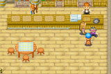
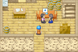

| Va para a pousada nos domingos entre as 7pm e 10pm quando voce tiver com Karen um coracao verde ou mais elevado. Dentro voce vera Karen e Duke, que estao comecando o campeonato de bebidas. Se Karen vencer entao Duke tera que pagar a longa conta que ele tem com o mercadiho de Jeff. Se Duke vence entao a conta sera limpa. Duke pensa que e interessante. Karen pergunta se voce gostaria de julgar eles. Voce pode escolhar que eles dois precisam parar ou apenas dizer "sim". Nao importa o que voce escolhe desde que eles dois estao indo beber assim mesmo. Quando terminar, o pobre Duje esta tao bebado que passa mal. Karen declara que ela e a vencedora e agora o Duke tera que pagar a conta. Muito intoxicada, ela sai da pousada para ir para casa. Depois que ela sai Doug pede a voce que leve Duke para casa. |  |
|  | Duke se recupera um pouco e voce leva para casa dele. Infelizmente para ele, manna nao estao muito contente de ver ele bebado de novo. Duke tem uma dor de cabeca mas ele nao ve motivos por que sua esposa deveria estar louca com ele entao Manna perguntou se ele teve outra partida de bebida com Karen. Ele fica completamente excitado pergunta como ela sabia! Manna e esta com muito desgosto dele e ele conta que Karen venceu. Duke sorri e diz que ela mais forte na bebedeira. Duke responde alegremente que isso nao a torna ela mais feliz. Ela realmente esta maluca e diz que eles agora terao que pagar a conta. Duke pensa por um momento e Manna percebe que ela nao vai contar o que ela trouxe! Ela se acalma e ela paga as dividas, mas esta saindo de suas economias. Duke espera que ele nao trouxe muito problema assim e Manna agradece voce por trzer esse "idiota" pra casa. Duke percebe que ela apenas chamou seu nome e eles dois comecam a discutir novamente. |